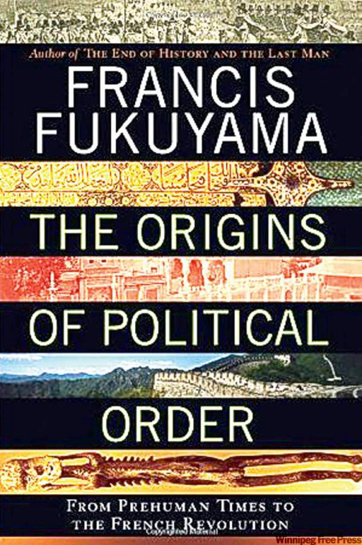
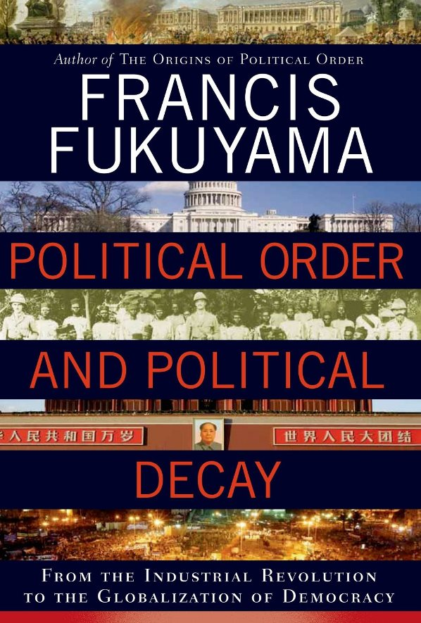

原本我的本行是物理，後來改行做金融和經濟。軍事則是服役期間被派到金門當了情報官，專門負責閲讀共軍的文件（簡體字是那時就學了），然後寫報告，結果後來對共軍的發展一直很關注。這也就是我這個部落格的三大主題。不過我對國際關係和政治體系也很有興趣，尤其是和經濟發展或政略戰略有關聯的，我已經在前面的一些文章稍微射獵。但是我在政治學方面的學術根底不够，若是要寫大題目，怕貽笑大方，所以一直計劃着想挑選好的文章來翻譯或摘要。
我過去這两年最喜歡的政治書籍是福山（Fukuyama）的两本新書。福山是個很有意思的人，他在25年前靠“歷史的終點”（“The End of History”）一炮而紅，後來新保守主義（Neo-con）視他為宗主之一。既然美國是人類演化的終點，那侵略落後國家來强加美式制度就是有良知的美國人的天賦責任，而小布希是很有良知的，於是找了個藉口（WMD，Weapons of Mass Destruction）就侵略了伊拉克。没想到福山也有他自己的良知，而且和小布希不一様，福山的良知是基於現實結果的，所以他居然為伊拉克戰争而道歉了。此外，美國像他這様成了大名的學者，大多從此不幹正事，只是在某個智庫掛個名，然後到處給演講，重彈老調騙取出場費，可是福山卻老老實實地繼續做研究。從福山最近這十年所寫的東西來看，他實在經過了非常痛苦的内心挣扎，在仔細檢驗事實真相之後，不得不承認他的舊理論的謬誤。除了那两本新書之外，他在最近一期的Foreign Affairs裡所刊的那篇“America in Decay：The Sources of Political Dysfunction”（“衰退中的美國：政治失調的原因”），雖然談的是全世界都知道的一件事，其討論之深入、援例之廣博，還是無人能出其右。

政治秩序的起源，從史前時代到法國大革命。

政治秩序與衰退，從工業革命到民主全球化。
可惜不論他的書還是文章都太深太博，我實在没空來翻譯（而且台灣好像有一位教授已經把它整本翻出來了）。剛好昨天在Financial Times（金融時報）上有一篇由Martin Jacques所寫的社論叫“The Myopic Western View of China's Rise”（“西方對中國制度的短視”），基本上是同一個論點（作者顯然也讀了福山的書），但是淺顯簡潔得多了，這我還有時間翻譯一下。熟悉英文的讀者可以直接看原文：http://www.ft.com/intl/cms/s/0/b2f1ef30-47c2-11e4-ac9f-00144feab7de.html?siteedition=intl#axzz3H1sYjSmv 。
西方總以為中國會垮在它的政治制度上：中國不是西方式民主，所以它的政府撑不了多久，遲早得要改學歐美的制度。可是中國自己的制度其實已經有三十多年成功的紀錄，而且還推動了人類史上最偉大的經濟變革。中國政府效率極高，不但有高瞻遠矚的戰略眼光，同時也是非常務實而勇於嘗試的。人民的生活水準大幅提高，因而對政府十分支持。所以等着中國垮台（尤其有些人總鼓吹會馬上垮台）是完全不切實際的。事實上，真正可能發生的是經濟繼續發展，生活水準持續提升，而中國政府也越來越受百姓支持。
然而經濟發展並不是中共當局唯一的民意依靠。西方人老是假設民主選舉是任何政權的合法性來源；這對中國來說，是大錯特錯的。中國有2000多年的天命觀念，國與家並列為中華文化的基石，中央政府是中華文明的具體化身和保衛者，這才是中國政權正統性的根源；而選拔賢能、為民服務的傳統和君臣父子之間的倫理關係，更是根深蒂固的中國獨有文化。
在古中國的朝廷昏庸衰弱的時代，整個國家也會跟着亂了；最明顯的例子就是1840年鴉片戰爭到1949年中共建國的那一百多年。所以中共在政治上的成就之一，就是在長期衰敗之後，重建了强而有力的中央政權，在現代背景下，恢復了它的各項固有職能，包括它在國家社會的核心地位、賢能治國的傳統、政權的正統性和組織動員能力。
很多人以為中共就是中共，它的制度一直没變。這個錯覺來自於只把民主化才算是改革。其實自1978年以來，中國政府經歷了不間斷的巨大改革，其幅度遠超過英美自己所採行的變動。只要想一想，三十多年來中國推動了如此大規模的經濟升級轉型，它的政府怎麼可能没有進行深刻的改革呢？這個經濟發展和政治改革手牵手一起前進的過程，只會持續下去，而且會更讓人嘆為觀止。所以正確的態度不是把中國的政體當作一個脆弱、隨時會垮的没用東西，而是應當認識到，根據過去三十年的實踐結果，它是一個極為成功的體系，整個世界都將日益積極向它學習。
西方人喜歡假設是中國，而不是民主國家，會遭遇一連串的治理難題。這只是因為他們脱離了歷史現實，靠純粹空想就把民主制度定義成一個永恒而完美的烏托邦。張大眼睛仔细看，你會發現其實美國的民主政府才是無力改革、短視近利、黨同伐異而且純為富人服務。
從歷史的大角度看，西方民主社會很可能將面臨艱難颠仆的未來。這些民主國家過去的成功和它們人民的高生活水準，實在是植根於200多年來對世界的經濟掠奪和政治控制，這當然是無法持續的。
現在西方國家普遍在衰退，歐洲尤其明顯。到2030年，中國經濟規模大概會是美國的两倍，可能高達世界的1/3，屆時美國的霸權將煙消雲散，而其人民必然會對國内的政治精英和體制進行反省。歐美各國的平均生活水準已經停滞了好一段時間了，你真以為能有穩定的社會？
歷史的常態是崛起中的國家有團結穩定的内政，衰落中的帝國則内部纷争不斷。我們不該低估是西方民主國家而不是中國，會遭遇更嚴峻的治理難題的可能性。
先生翻译的"The Myopic Western View of China's Rise"非常好, 我读起来很享受. 中国近代饱受列强侵略, 丧权辱国. 当回顾历史, 我除了牢记历史教训, 也庆幸中国被打醒了.
下面是先生正文提到 "America in Decay：The Sources of Political Dysfunction"观察者的中文翻译文章:
福山：衰败的美利坚（完整版）:
www.guancha.cn/.../2014_10_12_275200.shtml 非常值得一读的好文, 各位不要错过.
文章比較長，但是論點十分深刻，福山並非浪得虛名。
goldshore
2017-05-25 00:00
To追云燕
奇怪，我也記得回答過了。
omituofo
2017-05-25 00:00
我发现很多人都喜欢割裂的看中共历史，其实个人觉得这样过于主观和不尊重历史，其实可以看看中共一些在外演讲阐述共产主义道路的视频，又或者看看流出来的王岐山讲话视频。革命不是请客吃饭，永远都有代价要付，很多时候是领导人素质和经历带来的必然代价，历史总是滚滚向前，这些错误常常会带给民族和国家巨大的灾难，但是多难兴邦，优秀的民族和体制本身就是不断学习和提升，跟上历史的车轮，勇攀高峰。关于毛的问题很多人甚至我自己都在心理鄙视过，但是如果毛能从革命建国立马转变成循规蹈矩的共和国建设者，这其实非常不现实，何况在那种国情和世界情况下，在某些史料证明中，他当时在共产主义世界中取得的个人地位相当于他之前的斯大林，共产党集团虽然失败了，但是假设成为这条道路的领导人没有价值也是我们后来的看法而已。anyway, 100年之后再讨论毛吧，现在的说法都太短视了.毛泽东的级别不只是是国家领导人，在这个时代他的评价定论尚早
我想一個手上有那麽多人命債的歷史人物，永遠都不可能完全洗白。
"文革属于歷史的偶然", 文革是历史的必然, 文革是中国有史以来最民主, 最敢于向所有规则和传统挑战的十年, 但同时也是最血腥, 最不理智的十年.
打了很多字又删了, 台湾人和大陆人区别就是课本里的"旧中国人"和"新中国人"的区别, 你们没有经历过我们共和国的70年历史, 你们真的不懂
台湾是在二战后, 也通过自己努力, 成为西方经济体下一个经济部门和车间, 因为你们人少, 而且政治上完全融入美国体系, 所以可以通过集中精力, 发展少数几个产业, 就可以达到一个比较发达的水平....
但是中国大陆不一样, 我们的人口是美, 欧, 日之和的1.5倍, 我们是超级大个子, 我们不可能依赖某个国家, 因为也不会有国家愿意让你依赖, 为了工业化, 现代化, 我们必须走一条完全独立自主, 而且异常艰苦的道路, 人口是财富是资源, 这是工业化之后. 但是在一个农业国向工业国转型的过程中, 人口是诅咒是负担.
昨天观网的文章, 对于中国的工业化之路介绍很全面:
www.guancha.cn/WenYi2/2017_05_26_410182.shtml 人少和人多只是規模的差異，外銷主導的發展本質是完全相同的。
中国在二战后进入社会主义国家是中国当时社会的必然选择, 文革十年也是必然会发生的, 如果没有文革十年这样直观而强烈得冲碎了着每一个中国人最基本的价值观, 今后也会以某个形式, 某个时间爆发出来. 文革十年之后就是
我再强調一次，連帶關係不是因果關係，只因爲歷史是這樣發生的，並不意味著每一個事件都對後來都有正面的貢獻。如果真的有這種正面貢獻，我們就應該可以用理智分析出其脈絡。
如果用台湾做对比, 很多事情就很明白了, 上面所述的三点新中国的特征可以放在台湾来看, 可以把台湾的现状从一个全新的角度看的透彻
當代的大陸青年，的確有較好的辯證法訓練，但是無中生有的陋習，卻和臺灣一樣。這點我在最新的文章裏討論過了。
我上面所说的在台湾和香港的"旧中国"和大陆的"新中国"的词汇, 这最早是蒋介石在抗战胜利告全国同胞书中第一次运用. 但是在第二次国共内战失败后, 蒋介石一方就不提了, 共产党一方接着说这个概念.
可以用理智分析看出對後來工業化做準備的中共政策，是40和50年代的土改。它也打破了舊有的宗族社會，相對地提升了個人和國家的重要性。這點我們兩年前已經討論過了。
omituofo
2017-05-26 00:00
中国共產党的建立必须要有实体, 那就是中国人. 而中国人是有五千年歷史的民族, 它的文化里有糟糠也有无数的光辉. 中国共產党不是凭空就能跳出来的, 他的產生离不开歷史的框架而他的作为也必须接受批判. 一总而言, 中国共禅党是否伟大现在还难以下定论. 而我认为, 中共產党应该是谦卑的, 他应该说我是渺小的, 我也会犯错, 但是我愿意为歷史做出伟大的贡献.
文化不是我的專業，我只能針對個別特定問題，做理性的分析和解答。我想當代有不少這方面的專家，你可以去找找他們的著作。
我所谓歷史的必然性, 当然也是后见的有关各民族的兴衰或灭亡. 讲的是一种歷史规律. 如果单以中华民族而言, 因为她自古以来就有庞大人口, 加上悠久的文化和包容性以为凝聚集体意识的因子, 所以她是不可能会消亡而只会沉沉浮浮. 现在这个民族又遇上了歷史的转折点, 正是奋力一搏的时候; 所以我也谈到近世中国人所表现出来的衝动. 王先生说是百年来衰败所造成的自卑, 那固然不错. 但如果谈得远一点, 把这种衝动说成是肤浅, 漫不经心, 稍有成就即酖于安乐, 那或许更能在提升集体国民素质上找到与西方国家抗衡的基点.
歷史是否有必然性，是個老題目。我認爲是否定的。一方面這是因爲人類社會權力集中，所以像文革這樣大事件，基本上仍然是毛澤東一人所決定。我本身的經驗是，同樣的問題，個人的決定有很大的隨機因素，例如有時候我可以拒絕面前的那桶冰淇凌，有時則不能。另一方面，連社會整體的文化，都可以由少數人有意地扭轉改變，例如Bismarck把懶散嗜酒的德國人改造成嚴謹守秩序，又如李登輝把臺灣多數人整成白癡，都只花了一代人的時間。
mr edwin
2017-05-27 00:00
共产党的之所以能成功，对理想的坚持和对现实的考量是不可少的元素，但是从精神层面来说即使在1970年的中国其国民素质，道德操守，信仰追求也远比当今中国更强，虽然自傲狂妄，不切实际，但是文革能被之所以能被广大中下阶层民众接受并扩大化，靠纯忽悠可能是不行的。文革的最大错误就在于脱离现实谈理想，在毛泽东的错误影响下发展成理想者和现实者的内战，通过愚民政策来鼓动人民，忽略了中国人民的实际需求是理想者失败的根本原因。但是相反自邓小平之后，放下主义谈发展，让中国人虽然在生活水平上有较大发展，但是丢掉了共产党坚持多年的理想追求，90年代反智风横行，社会治安混乱，中国人道德水准，理想追求和党员的自我修养荡然无存。再看之前中远集团那篇文章，触目惊心，共产党的天下居然买不到党旗，资产数千亿的国企领导班子毫无党性，把为人民服务这句话踩在脚下，共产党员最后为何到如此地步。我并非为之前共产党的错误辩护，只是对如今中国共产党还能不能对当年对中国人民和世界人民做的承诺负责感到怀疑。
習近平的改革，任重道遠。
mr edwin
2017-05-27 00:00
历史确实喜欢开玩笑，没有因就没有果。中共在建党初期完全是个大洋奴，属于海外革命团体的中国分支，而建设这个革命团体的人又恰恰是一群爱国者，是试图用共产主义来救国的人，只不过在救国和共产主义这两者上每个中国共产党员都有自己的理解和衡量。其实文革的因在共产党建立之初就彻底种下了，早期的共产党组织是所谓“洋奴”，效仿苏联，更倾向于后者，把认为实现救国的前提是把纯洁的共产主义理想贯彻落实，其发动的肃反运动危害之大不亚于苏共的一系列清洗，只不过之后一直忙于生存和发展，没有把这个问题彻底说清楚。毛不是一个民族主义者，也不是一个纯粹的共产主义者，也不是一个讲政治正确的政客。他不在意所谓传统，中国传统文化在他眼里可能一文不值，这点倒是很像民国时期很多大师，比如鲁迅胡适等开明文人。在建国之前，毛的思想更偏重于救国图存，在建国之后，随着一系列战争的成功，共产党的建设发展计划有了一定的成就，再加上后来的大跃进让他错误估计当下形式，毛的思想又逐渐向理想转移，开始不信任自己曾经的同志，最后一发不可收拾，变成了中国人在思想和政治领域的全面内战。最后还是现实战胜了理想，不过好在邓小平是一个能在两者间充分平衡的人，他的政治智慧和影响力让中国以及他自己不至于从一个极端到另一个极端。只不过可惜的是在他之后的共产党人很多都彻底迷失了道路。白浪滔天，秦皇岛外打鱼船，一片汪洋都不见，知向谁边？
美國人喜歡說，毛澤東發動文革是爲了鬥倒劉少奇派，我想這太小看他了。當時他對軍隊仍然是一呼百應，若只是要打倒劉少奇，簡單至極，根本用不着搞文革。
singsing11
2017-06-22 00:00
其实李大叔有否真正使用过微信支付或支付宝等纟统? 实际上,日常使用信用咭等的支付系统, 本身已经出现大量被盗取资料甚至有大量金钱损失, 不担心实际上的威胁, 反而担心微信支付?他们的金额就算被盗, 金额其实也很有限, 无论安全性及方便性, 比很多现时西方社会流行的支付方式, 实在优胜更多了, 说得不好听,是落后就落后了, 不要再找借口来合理化自己的落后.
你説的有關信用卡常被盜刷，沒有錯，但是不應該上綱到人身攻擊。
不太认同毛是为了个人权力发动文革，文革是什么、为什么要发动文革、文革中会发生什么以及发生了什么恐怕没人会比毛更加清楚。毛在文革中“冷血”的表现恐怕来自于其“理想性”。去读毛的实践论很容易知道，毛的想法一个理论的正确与否，不能光说光想，而要亲自去实践一下，文革恐怕也是这一思想的具象产物，大约是“天下为棋,苍生作子”的感觉。而在毛临终前启用邓小平、推动中美建交，其实对后面的改革开放有极其重大的影响（从这点上看，即使耄耋之年的毛依旧极具战略眼光，并非固执愚蠢的独裁者。）。评价毛、评价文革，以及这两者与后来的改革开放又有什么关系，现在还难以定论。等再过50年，回顾共和国前半生，大约会有粗浅的轮廓。
转一段邓的记者访谈：
book.ifeng.com/.../23279575_0.shtml 要更客观的认识文革，以及毛后期的作为，现在既没办法也不到时候，等待历史的沉淀吧。
其实我一直在想，如果哪一天现在中共的执政遭到挑战，这个挑战恐怕不太可能来自于西方所谓的自由主义思想，而是来自那位老人家，这点上恐怕非大陆人没法办法理解。
你在重複我們一兩年前討論的結論。
你的描述並非完全沒有道理，不過最後為地方官脫罪的説辭我不能苟同：這些項目都是有合同的，合同的核心是私營資本必須投入多少多少，“高風險投資失敗”是生意不賺錢，和廠房根本沒建成是兩回事。你事先不去檢驗資金是否存在，事後放著違約的法律責任不去查辦，這本身就是又一層次的犯法謀私。
2021-06-20 00:59 回复
所以國家紀委、監委早該介入；這些半導體詐騙所造成的損失，比之華融有過之而無不及，槍斃幾個人也不爲過。
2021-06-20 00:12 回复
芳草鮮美落英繽紛
2022-03-21 02:26
俄烏衝突以來，Francis Fukuyama和Paul Krugman陸續寫出水平很低的文章，如前者的《Preparing for Defeat》談俄國像英美媒體複讀機，後者的《Another Dictator Is Having a Bad Year》談中國，犯了先生此篇文章中所提的各種短視。請問他們是真的被困在西方的信息繭房裡，還是為了個人趨利避害而討好西方愚民，還是為了配合西方宣傳體系工作？現在西方知識份子的處境為何？
我覺得是歐美社會全面愚化的結果，媒體、學術和智庫經過兩個世代的嚴格逆淘汰，只有最愚蠢、最偏執、最欠缺科學修養的人存活下來，而且還不斷被鼓勵强化自身的心理成見和宗教迷信，能維持理性思維的被徹底邊緣化（例如Stiglitz和Mearsheimer）。中國也有類似的現象，像是中醫教就已經腐爛了三四個世代，幾百萬從業者中，還想要像屠呦呦那樣做科學的不及1%。
2022-03-21 04:29 回复